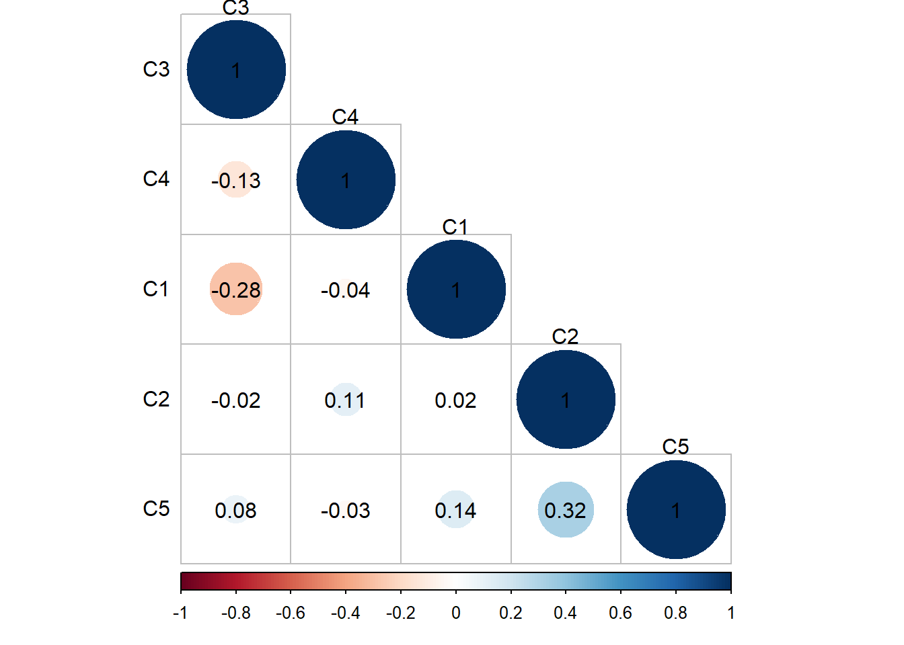
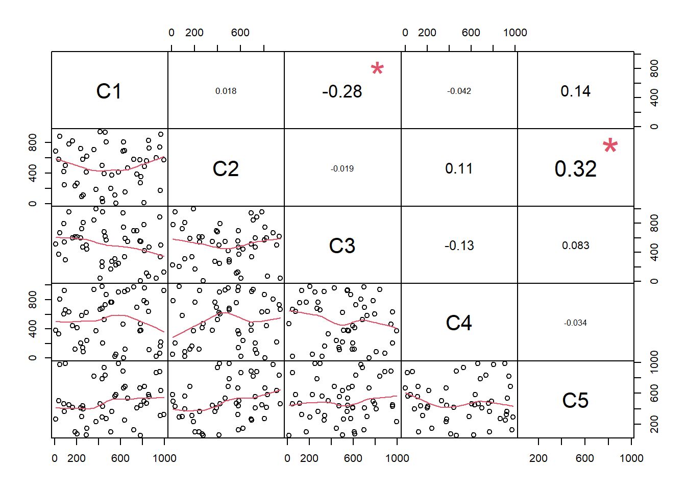

c(1,2,3,4,5,6,7,8,9,10)Ejercicios
Resolver los siguientes ejercicios de práctica
Vectores
- Crear un vector numérico con valores del 1 al 10.
- Crear un vector de caracteres con nombres de colores.
- Sumar dos vectores numéricos elemento por elemento.
- Calcular el producto escalar de dos vectores numéricos.
- Calcular la media de un vector numérico.
- Calcular la mediana de un vector numérico.
- Encontrar el valor máximo y mínimo de un vector numérico.
- Crear un vector booleano que identifique los números pares en un vector numérico.
- Crear un vector de fechas para una semana completa.
- Crear un vector numérico con números aleatorios.
- Ordenar un vector numérico de forma ascendente.
- Ordenar un vector numérico de forma descendente.
- Concatenar dos vectores numéricos.
- Reemplazar los valores negativos de un vector numérico por ceros.
- Calcular la suma acumulada de un vector numérico.
- Multiplicar cada elemento de un vector numérico por un escalar.
- Calcular la distancia euclidiana entre dos vectores numéricos.
- Encontrar los índices de los elementos mayores que cierto valor en un vector numérico.
- Crear un vector lógico que identifique los valores duplicados en un vector 1. numérico.
- Calcular la longitud de un vector.
Matrices
- Crear una matriz 3x3 con valores del 1 al 9.
- Calcular la suma de dos matrices.
- Calcular la resta de dos matrices.
- Calcular el producto de dos matrices.
- Calcular el determinante de una matriz cuadrada.
- Calcular la matriz inversa de una matriz cuadrada.
- Transponer una matriz.
- Calcular la media de cada columna de una matriz.
- Calcular la suma de cada fila de una matriz.
- Calcular el producto punto entre dos filas de una matriz.
- Calcular la suma de cada columna de una matriz.
- Extraer la diagonal de una matriz.
- Cambiar el nombre de las filas y columnas de una matriz.
- Concatenar dos matrices por filas.
- Concatenar dos matrices por columnas.
- Reemplazar los valores negativos de una matriz por ceros.
- Calcular la matriz de covarianza de una matriz de datos.
- Multiplicar cada elemento de una matriz por un escalar.
- Encontrar el valor máximo y mínimo de una matriz.
Operaciones adicionales
- Resolver un sistema de ecuaciones lineales representado por una matriz.
- Calcular la proyección ortogonal de un vector sobre otro.
- Calcular el rango de una matriz.
- Calcular la traza de una matriz.
- Calcular la matriz identidad de tamaño n.
- Calcular la matriz diagonal a partir de un vector.
- Calcular la matriz de correlación a partir de una matriz de datos.
- Resolver un sistema de ecuaciones lineales sobredeterminado.
- Calcular la matriz de covarianza a partir de una matriz de datos.
- Resolver un problema de aplicación que involucre vectores y matrices.
Solución
Resolver los siguientes ejercicios de práctica
[@R-Studio]
Vectores
Crear un vector numérico con valores del 1 al 10.
- Opción 1:
- Opción 2:
1:10- Opción 3:
seq(1,10)Crear un vector de caracteres con nombres de colores.
c("Azul","Negro","gris","verde","naranja","rosa","rojo")Sumar dos vectores numéricos elemento por elemento.
V1 = 1:10
V2 = 11:20
V3 = V1 + V2El vector 1 contiene los valores \(V_1 =\) 1, 2, 3, 4, 5, 6, 7, 8, 9, 10
El vector 2 contiene los valores \(V_2 =\) 11, 12, 13, 14, 15, 16, 17, 18, 19, 20
Al sumar los valores de cada vector obtenemos \(V_3 =\) 12, 14, 16, 18, 20, 22, 24, 26, 28, 30
Calcular el producto escalar de dos vectores numéricos.
PE= V1 %*% V2Al realizar el producto escalar de los vectores del punto anterior \(V_1\) y \(V_2\), el resultado es: \(V_1 \cdot V_2=\) 935
Calcular la media de un vector numérico.
med = mean(V1)Para los valores del vector \(V_1 =\) la media de sus valores es: 5.5
Calcular la mediana de un vector numérico.
mediana=median(V2)Para los valores del vector \(V_2 =\) la mediana de sus valores es: 15.5
Encontrar el valor máximo y mínimo de un vector numérico.
set.seed(123)
x<-sample(1:50, size = 10, replace = FALSE)
maximo = max(x)
minimo = min(x)Para un vector con \(10\) valores aleatorios entre \(1\) y \(50\), el cual contiene los valores \(x = [\) 31, 15, 14, 3, 42, 43, 37, 48, 25, 26 \(]\) el número máximo es: 48 y el número mínimo del mismo vector es: 3
Crear un vector booleano que identifique los números pares en un vector numérico.
pares = x%%2==0Usando los mismos valores del vector \(x =[\) 31, 15, 14, 3, 42, 43, 37, 48, 25, 26 \(]\) al resolver el ejercicio obtenemos el vector \(pares = [\) FALSE, FALSE, TRUE, FALSE, TRUE, FALSE, FALSE, TRUE, FALSE, TRUE \(]\)
Crear un vector de fechas para una semana completa.
inicio = dmy("19/02/2024")
fin = inicio + days(6)
semana = seq(inicio,fin,by="day")Para resolver este ejercicio es necesario instalar y activar el paquete lubridate, se debe escribir la fecha de inicio y la guardamos en \(inicio =\) 2024-02-19 y a esta fecha sumarle \(6\) días para obtener el día final de la semana o la fecha que está una semana despues de la fecha inicial \(fin\) 2024-02-25, finalmente se genera el vector \(semana\) con los valores: [\(2024-02-19, 2024-02-20, 2024-02-21, 2024-02-22, 2024-02-23, 2024-02-24, 2024-02-25\)]
Crear un vector numérico con números aleatorios.
set.seed(123)
x<-sample(1:50, size = 10, replace = FALSE)Podemos utilizar el mismo código para obtener el vector con números aleatorios \(x =\) \([\) \(31, 15, 14, 3, 42, 43, 37, 48, 25, 26\) \(]\)
Ordenar un vector numérico de forma ascendente.
sort(x)Ordenar un vector numérico de forma descendente.
sort(x, decreasing = TRUE)Concatenar dos vectores numéricos.
set.seed(35)
y = sample(-50:50, size = 10, replace = TRUE)
z = sample(0:100, size = 10, replace = TRUE)
s = c(y,z)Con el código anterior se generan dos vectores con \(10\) valores aleatorios siendo: \[y=[ 23, 19, -43, 14, -44, -40, -37, 50, -33, 47 ]\] \[z=[ 31, 72, 88, 26, 84, 82, 13, 4, 5, 6 ]\] al concatenarlos con el código s=c(y,z) obtenemos el siguiente vector: \[s = [23, 19, -43, 14, -44, -40, -37, 50, -33, 47, 31, 72, 88, 26, 84, 82, 13, 4, 5, 6]\]
Reemplazar los valores negativos de un vector numérico por ceros.
cero = ifelse(y<0,0,y)El código anterior genera un nuevo vector basandose en el vector \(y\), pero los valores negativos de \(y\) se remplazaron por \(0\) obteniendo el siguiente vector \[y=[23, 19, -43, 14, -44, -40, -37, 50, -33, 47]\] \[cero=[23, 19, 0, 14, 0, 0, 0, 50, 0, 47]\]
Calcular la suma acumulada de un vector numérico.
valores = c(5:20)
suma = cumsum(valores)Del vector \(valores = [5, 6, 7, 8, 9, 10, 11, 12, 13, 14, 15, 16, 17, 18, 19, 20]\) la suma de sus valores es: \(suma =[5, 11, 18, 26, 35, 45, 56, 68, 81, 95, 110, 126, 143, 161, 180, 200]\), el último valor de este vector representa la suma acumulada de todos los valores
Multiplicar cada elemento de un vector numérico por un escalar.
k = 3
valores_mult = k*valoresUtilizando el mismo vector del punto anterior \(valores =[ 5, 6, 7, 8, 9, 10, 11, 12, 13, 14, 15, 16, 17, 18, 19, 20]\) y la constante \(k =3\), al multiplicar el vector por el escalar se obtiene el siguiente vector \(v_k = [15, 18, 21, 24, 27, 30, 33, 36, 39, 42, 45, 48, 51, 54, 57, 60]\)
Calcular la distancia euclidiana entre dos vectores numéricos.
La distancia euclidiana entre dos vectores numéricos la define la ecuación 1: \[d_E (P,Q) = \sqrt{\left( p_1-q_1 \right)^2 + \left(p_2 - q_2 \right)^2+...\left( p_n-q_n \right)^2} = \sqrt{\varSigma_{i=1}^{n}\left( p_i-q_i \right)^2}\]
set.seed(61)
a = sample(1:100, size = 10, replace = TRUE)
b = sample(1:100, size = 10, replace = TRUE)
d = sqrt ( sum ((a - b) ^ 2))Para los vectores \(a\) y \(b\) la distancia euclidiana es: \(147.543214\) \[a=[12, 71, 23, 42, 20, 98, 75, 97, 4, 89]\] \[b=[96, 67, 80, 78, 40, 31, 64, 27, 15, 78]\]
Encontrar los índices de los elementos mayores que cierto valor en un vector numérico.
numero = 50
set.seed(61)
c = sample(1:100, size = 5, replace = TRUE)
indice = which(c > numero)
c
indiceCrear un vector lógico que identifique los valores duplicados en un vector numérico.
set.seed(65)
c = sample(1:5, size = 5, replace = TRUE)
vector_logico <- duplicated(c) | duplicated(c, fromLast = TRUE)
c
vector_logico
## [1] 3 2 4 1 1
## [1] FALSE FALSE FALSE TRUE TRUECalcular la longitud de un vector.
a
length(a)
## [1] 12 71 23 42 20 98 75 97 4 89
## [1] 10Matrices
En este documento no se podrá observar la forma de la matriz, sin embargo, se observarán los datos de estas, la forma de la matriz creada u obtenida solo se vería si las operaciones se realizan en la consola de RStudio
Crear una matriz 3x3 con valores del 1 al 9.
matrix(1:9, nrow = 3)Genera la matriz siguiente
\[\begin{equation} \begin{vmatrix} &1 & 4 & 7&\\ &2 & 5 & 8&\\ &3 & 6 & 9& \end{vmatrix} \end{equation}\]
Calcular la suma de dos matrices.
m1 = matrix(5:20, nrow=4)
m2 = matrix(25:40, nrow = 4)
m3 = m1+m2
kable(m3)\[\begin{equation} m_1 = \begin{vmatrix} &5 & 9 & 13 & 17& \\ &6 & 10 & 14 & 18& \\ &7 & 11 & 15 & 19& \\ &8 & 12 & 16 & 20& \end{vmatrix} \end{equation}\]
\[\begin{equation} m_2 = \begin{vmatrix} &25 & 29 & 33 & 37& \\ &26 & 30 & 34 & 38& \\ &27 & 31 & 35 & 39& \\ &28 & 32 & 36 & 40& \end{vmatrix} \end{equation}\]
\[\begin{equation} m_3 = m_1 + m_2 = \begin{vmatrix} & 30 & 38 & 46 & 54 & \\ & 32 & 40 & 48 & 56 & \\ & 34 & 42 & 50 & 58 & \\ & 36 & 44 & 52 & 60 & \end{vmatrix} \end{equation}\]
Calcular la resta de dos matrices.
m1 = matrix(5:20, nrow=4)
m2 = matrix(25:40, nrow = 4)
m3 = m1-m2
kable(m3)\[\begin{equation} m_1 = \begin{vmatrix} &5 & 9 & 13 & 17& \\ &6 & 10 & 14 & 18& \\ &7 & 11 & 15 & 19& \\ &8 & 12 & 16 & 20& \end{vmatrix} \end{equation}\]
\[\begin{equation} m_2 = \begin{vmatrix} &25 & 29 & 33 & 37& \\ &26 & 30 & 34 & 38& \\ &27 & 31 & 35 & 39& \\ &28 & 32 & 36 & 40& \end{vmatrix} \end{equation}\]
\[\begin{equation} m_3 = m_1 - m_2 = \begin{vmatrix} & -20 & -20 & -20 &-20& \\ & -20 & -20 & -20 &-20& \\ & -20 & -20 & -20 &-20& \\ & -20 & -20 & -20 &-20& \end{vmatrix} \end{equation}\]
Calcular el producto de dos matrices.
m1 = matrix(5:20, nrow=4)
m2 = matrix(25:40, nrow = 4)
m3 = m1*m2
kable(m3)\[\begin{equation} m_1 = \begin{vmatrix} &5 & 9 & 13 & 17& \\ &6 & 10 & 14 & 18& \\ &7 & 11 & 15 & 19& \\ &8 & 12 & 16 & 20& \end{vmatrix} \end{equation}\]
\[\begin{equation} m_2 = \begin{vmatrix} &25 & 29 & 33 & 37& \\ &26 & 30 & 34 & 38& \\ &27 & 31 & 35 & 39& \\ &28 & 32 & 36 & 40& \end{vmatrix} \end{equation}\]
\[\begin{equation} m_3 = m_1 * m_2 \begin{vmatrix} & 125 & 261 & 429 & 629 & \\ & 156 & 300 & 476 & 684 & \\ & 189 & 341 & 525 & 741 & \\ & 224 & 384 & 576 & 800 & \end{vmatrix} \end{equation}\]
Calcular el determinante de una matriz cuadrada.
a<-c(4,5,4)
b<-c(3,4,4)
d<-c(8,7,7)
B<-rbind(a,b,d)
det(B)\[\begin{equation} det(B) = det \begin{vmatrix} & 4 & 5 & 4 \\ & 3 & 4 & 4 \\ & 8 & 7 & 7 \end{vmatrix} = 11 \end{equation}\]
Calcular la matriz inversa de una matriz cuadrada.
a<-c(4,5,4)
b<-c(3,4,4)
d<-c(8,7,7)
B<-rbind(a,b,d)
kable(solve(B))Transponer una matriz
set.seed(876)
C1=sample(1:1000,10,replace = F)
C2=sample(1:1000,10,replace = F)
C3=sample(1:1000,10,replace = F)
C4=sample(1:1000,10,replace = F)
C5=sample(1:1000,10,replace = F)
m=cbind(C1,C2,C3,C4,C5)
t_m=t(m)
colnames(t_m) = c("A","B","C","D","E",
"F","G","H","I","J")
kable(t_m)Calcular la media de cada columna de una matriz
set.seed(876)
C1=sample(1:1000,100,replace = F)
C2=sample(1:1000,100,replace = F)
C3=sample(1:1000,100,replace = F)
C4=sample(1:1000,100,replace = F)
C5=sample(1:1000,100,replace = F)
m=cbind(C1,C2,C3,C4,C5)
media = colMeans(m)
m=rbind(m,media)
kable(headTail(m))Calcular la suma de cada fila de una matriz
set.seed(876)
C1=sample(1:1000,100,replace = F)
C2=sample(1:1000,100,replace = F)
C3=sample(1:1000,100,replace = F)
C4=sample(1:1000,100,replace = F)
C5=sample(1:1000,100,replace = F)
m=cbind(C1,C2,C3,C4,C5)
suma = rowSums(m)
m=cbind(m,suma)
kable(headTail(m))Calcular el producto punto entre dos filas de una matriz
Para este ejemplo las filas de la matriz deberán usarse como vectores, para realizar el producto punto.
El producto punto es la suma de los productos de cada elemento de cada vector, en el caso de dos vectores. \[v_1 \cdot v_2 = (a_{v_1}*a_{v_2})+(b_{v_1}*b_{v_2})+(c_{v_1}*c_{v_2})+...\]
set.seed(876)
C1=sample(1:1000,100,replace = F)
C2=sample(1:1000,100,replace = F)
C3=sample(1:1000,100,replace = F)
C4=sample(1:1000,100,replace = F)
C5=sample(1:1000,100,replace = F)
m=cbind(C1,C2,C3,C4,C5)
kable(headTail(m))De esta matriz usaremos la fila \(1\) y \(2\), para obtener el producto punto.
Donde cada fila tendrá los siguientes valores: \[f1= 351, 363, 78, 746, 839\] \[f_2= 183, 172, 210, 451, 844\] el producto punto lo obtenemos con el siguiente código
r=f1%*%f2Obteniendo el valor \(1.187611\times 10^{6}\)
Calcular la suma de cada columna de una matriz.
set.seed(876)
C1=sample(1:1000,100,replace = F)
C2=sample(1:1000,100,replace = F)
C3=sample(1:1000,100,replace = F)
C4=sample(1:1000,100,replace = F)
C5=sample(1:1000,100,replace = F)
m=cbind(C1,C2,C3,C4,C5)
suma = colSums(m)
m=rbind(m,suma)
kable(headTail(m))Extraer la diagonal de una matriz.
a<-c(4,5,4)
b<-c(3,4,4)
d<-c(8,7,7)
B<-rbind(a,b,d)
kable(B)De la matriz mostrada los valores de la diagonal son: 4, 4, 7 con el siguiente código:
diag(B)Cambiar el nombre de las filas y columnas de una matriz.
a<-c(4,5,4)
b<-c(3,4,4)
d<-c(8,7,7)
B<-rbind(a,b,d)
kable(B)Las columnas de esta matriz no están nombradas y las filas se llamán a, b, d, con el siguiente código se pueden modificar ambas caracteristicas de la matriz.
colnames(B)=c("C1","C2","C3")
rownames(B)=c("F1","F2","F3")
kable(B)Concatenar dos matrices por filas.
A <- matrix(c(1,2,3,4), nrow = 2, ncol = 2)
B <- matrix(c(10,11,12,13), nrow = 2, ncol = 2)
kable(A)
kable(B)
kable(rbind(A,B))Concatenar dos matrices por columnas.
A <- matrix(c(1,2,3,4), nrow = 2, ncol = 2)
B <- matrix(c(10,11,12,13), nrow = 2, ncol = 2)
kable(A)
kable(B)
kable(cbind(A,B))Reemplazar los valores negativos de una matriz por ceros.
set.seed(879)
A=matrix(sample(-1000:1000,16,replace = F),nrow = 4)
kable(A)
cero = ifelse(A<0,0,A)
kable(cero)Calcular la matriz de covarianza de una matriz de datos.
set.seed(174)
C1=sample(1:1000,10,replace = F)
C2=sample(1:1000,10,replace = F)
C3=sample(1:1000,10,replace = F)
C4=sample(1:1000,10,replace = F)
C5=sample(1:1000,10,replace = F)
m=cbind(C1,C2,C3,C4,C5)
cov_m=cov(m)
kable(m)
kable(cov_m)Multiplicar cada elemento de una matriz por un escalar.
set.seed(14)
C1=sample(1:1000,10,replace = F)
C2=sample(1:1000,10,replace = F)
C3=sample(1:1000,10,replace = F)
C4=sample(1:1000,10,replace = F)
C5=sample(1:1000,10,replace = F)
m=cbind(C1,C2,C3,C4,C5)
kable(m)
k = 4
m = m*k
kable(m)Encontrar el valor máximo y mínimo de una matriz.
set.seed(4)
C1=sample(1:1000,10,replace = F)
C2=sample(1:1000,10,replace = F)
C3=sample(1:1000,10,replace = F)
C4=sample(1:1000,10,replace = F)
C5=sample(1:1000,10,replace = F)
m=cbind(C1,C2,C3,C4,C5)
kable(m)
min(m)
max(m)| C1 | C2 | C3 | C4 | C5 |
|---|---|---|---|---|
| 504 | 312 | 803 | 300 | 511 |
| 587 | 414 | 411 | 197 | 203 |
| 819 | 62 | 365 | 911 | 592 |
| 771 | 614 | 560 | 893 | 910 |
| 71 | 130 | 176 | 150 | 405 |
| 684 | 152 | 869 | 453 | 692 |
| 371 | 385 | 893 | 832 | 65 |
| 757 | 596 | 898 | 880 | 304 |
| 698 | 767 | 928 | 433 | 152 |
| 307 | 747 | 303 | 54 | 892 |
## [1] 54
## [1] 928De esta matriz el valor máximo es \(928\) y el valor mínimo es \(54\)
Operaciones adicionales
Resolver un sistema de ecuaciones lineales representado por una matriz
Resolver el siguiente sistema de ecuaciones: \[3x-3y-5z=-77\] \[8x-7y-5z=-138\] \[-4x+4y+7z=105\]
Primero generaremos la matriz de los coeficientes de cada variable en cada ecuación y el vector de los resultados, obteniendo lo siguiente: \[\begin{equation} coeficientes= \begin{vmatrix} &3 & -3 & -5&\\ &8 & -7 & -5&\\ &-4 & 4 & 7& \end{vmatrix} \end{equation}\]
\[\begin{equation} resultados= \begin{vmatrix} &-77 & \\ &-138 & \\ &105 & \end{vmatrix} \end{equation}\]
Con el siguiente código
x=c(3,8,-4)
y=c(-3,-7,4)
z=c(-5,-5,7)
coeficientes=cbind(x,y,z)
resultados = c(-77,-138,105)Debemos calcular la matriz inversa de los coeficientes con el siguiente código
C_1=solve(coeficientes)Obteniendo la siguiente matriz
kable(C_1)Finalmente realizamos el producto punto con la matriz inversa obtenida y el vector de resultados obteniendo los valores de las variables
sol = C_1%*%resultados
kable(sol)Calcular la proyección ortogonal de un vector sobre otro.
La teoría de la proyección de un vector en otro vector lo puedes encontrar en el siguiente link Proyección de un vector sobre otro vector. Ejercicios resueltos, de esa fuente podemos obtener las siguientes formulas \[\left| \vec{P_{u,v}} \right|= \frac{\vec{u} \cdot \vec{v}}{\left| \vec{v}\right|}\] \[\vec{P_{u,v}} = \frac{\vec{u} \cdot \vec{v}}{\left| \vec{v}\right|} \cdot \vec{u}\] Las cuales representan el módulo y el vector de la proyección de un vector sobre otro, el modulo es un escalar \(\left| \vec{P_{u,v}} \right|\).
Debemos definir los vectores siguientes: \[\vec{u} = \langle 1,3,7 \rangle\] \[\vec{v} = \langle -1,2,-5 \rangle\] con el siguiente código:
u=c(1,3,7)
v=c(-1,2,-5)Determinaremos el módulo del vector \(\vec{u}\) con el siguiente código:
mod_v = norm(v,type = "2")
mod_vCon este valor podemos utilizar la formula completa para obtener el vector de la proyección de \(\vec{u}\) sobre \(\vec{v}\)
proy_uv = ((u%*%v)/mod_v)*vObteniendo el vector \(\vec{P_{u,v}} =\langle 5.4772, -10.9545, 27.3861\rangle\) y su módulo es: \(\left| \vec{P_{u,v}} \right| = 30\)
Calcular el rango de una matriz.
set.seed(4)
C1=sample(1:1000,10,replace = F)
C2=sample(1:1000,10,replace = F)
C3=sample(1:1000,10,replace = F)
C4=sample(1:1000,10,replace = F)
C5=sample(1:1000,10,replace = F)
m=cbind(C1,C2,C3,C4,C5)
rango = qr(m)$rankPara la siguiente matriz el rango2 es: \(r_m = 5\)
kable(m)| C1 | C2 | C3 | C4 | C5 |
|---|---|---|---|---|
| 504 | 312 | 803 | 300 | 511 |
| 587 | 414 | 411 | 197 | 203 |
| 819 | 62 | 365 | 911 | 592 |
| 771 | 614 | 560 | 893 | 910 |
| 71 | 130 | 176 | 150 | 405 |
| 684 | 152 | 869 | 453 | 692 |
| 371 | 385 | 893 | 832 | 65 |
| 757 | 596 | 898 | 880 | 304 |
| 698 | 767 | 928 | 433 | 152 |
| 307 | 747 | 303 | 54 | 892 |
Calcular la traza de una matriz.
set.seed(78)
C1=sample(1:1000,5,replace = F)
C2=sample(1:1000,5,replace = F)
C3=sample(1:1000,5,replace = F)
C4=sample(1:1000,5,replace = F)
C5=sample(1:1000,5,replace = F)
m=cbind(C1,C2,C3,C4,C5)
tr = sum(diag(m))Para la siguiente tabla la traza3 es igual a: \(T_r(A) = 2994\)
| C1 | C2 | C3 | C4 | C5 |
|---|---|---|---|---|
| 879 | 648 | 416 | 646 | 781 |
| 462 | 930 | 739 | 458 | 336 |
| 532 | 470 | 219 | 495 | 813 |
| 847 | 933 | 318 | 565 | 129 |
| 988 | 241 | 456 | 440 | 401 |
Calcular la matriz identidad de tamaño n.
n = 5
I = diag(1,nrow = n)
kable(I)| 1 | 0 | 0 | 0 | 0 |
| 0 | 1 | 0 | 0 | 0 |
| 0 | 0 | 1 | 0 | 0 |
| 0 | 0 | 0 | 1 | 0 |
| 0 | 0 | 0 | 0 | 1 |
Calcular la matriz diagonal a partir de un vector.
set.seed(833)
vector = sample(1:1000,5,replace = F)
m_d = diag(vector)| 511 | 0 | 0 | 0 | 0 |
| 0 | 183 | 0 | 0 | 0 |
| 0 | 0 | 808 | 0 | 0 |
| 0 | 0 | 0 | 849 | 0 |
| 0 | 0 | 0 | 0 | 405 |
Calcular la matriz de correlación a partir de una matriz de datos.
set.seed(831)
C1=sample(1:1000,50,replace = T)
C2=sample(1:1000,50,replace = T)
C3=sample(1:1000,50,replace = T)
C4=sample(1:1000,50,replace = T)
C5=sample(1:1000,50,replace = T)
m=cbind(C1,C2,C3,C4,C5)
corr_m = round(cor(m),4)| C1 | C2 | C3 | C4 | C5 | |
|---|---|---|---|---|---|
| C1 | 1 | 0.02 | -0.28 | -0.04 | 0.14 |
| C2 | 0.02 | 1 | -0.02 | 0.11 | 0.32 |
| C3 | -0.28 | -0.02 | 1 | -0.13 | 0.08 |
| C4 | -0.04 | 0.11 | -0.13 | 1 | -0.03 |
| … | … | … | … | … | … |
| C21 | 0.02 | 1 | -0.02 | 0.11 | 0.32 |
| C31 | -0.28 | -0.02 | 1 | -0.13 | 0.08 |
| C41 | -0.04 | 0.11 | -0.13 | 1 | -0.03 |
| C5 | 0.14 | 0.32 | 0.08 | -0.03 | 1 |
La cual es mas entendible si lo observamos en una tabla como la siguiente
corrplot(corr_m,
type = "lower",
upper = "pie",
lower = "color",
p.mat = corr_m,
tl.col="Black",
tl.srt = 0,
order = "hclust", addrect = 3,
pch.col = "black",
insig = "p-value",
sig.level = -1)
chart.Correlation(m, histogram = F, pch = 10)
Resolver un sistema de ecuaciones lineales sobredeterminado.
Para el siguiente sistema de ecuaciones \[3x+2y = 10\] \[5x-y = 8\] \[7x+3y = 20\]
El siguiente código nos permite resolver el sistema de ecuaciones por el método de minimos cuadrados
x = c(3,5,7)
y = c(2,-1,3)
A <- cbind(x,y)
b <- c(10, 8, 20)
solucion <- lm(b ~ A - 1)
coef(solucion)Donde \(x = 2\), \(y = 2\)
Calcular la matriz de covarianza a partir de una matriz de datos.
set.seed(831)
C1=sample(1:1000,50,replace = T)
C2=sample(1:1000,50,replace = T)
C3=sample(1:1000,50,replace = T)
C4=sample(1:1000,50,replace = T)
C5=sample(1:1000,50,replace = T)
m=cbind(C1,C2,C3,C4,C5)
cov_m = cov(m)| C1 | C2 | C3 | C4 | C5 | |
|---|---|---|---|---|---|
| C1 | 83416.415 | 1441.447 | -21477.481 | -3843.232 | 10914.494 |
| C2 | 1441.447 | 73860.613 | -1367.201 | 9634.976 | 22879.698 |
| C3 | -21477.481 | -1367.201 | 70152.142 | -11139.064 | 5768.539 |
| C4 | -3843.232 | 9634.976 | -11139.064 | 99672.924 | -2814.543 |
| C5 | 10914.494 | 22879.698 | 5768.539 | -2814.543 | 69098.857 |
Resolver un problema de aplicación que involucre vectores y matrices.